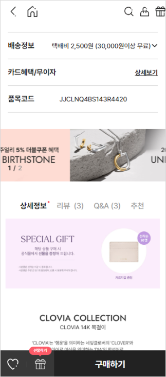
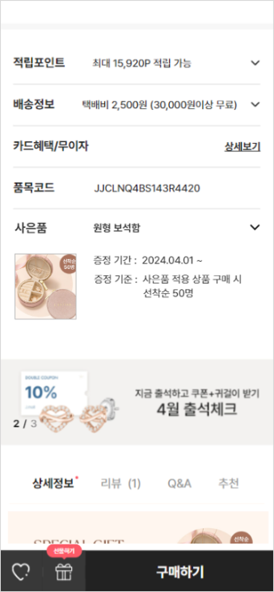
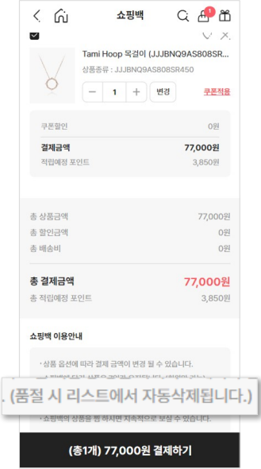
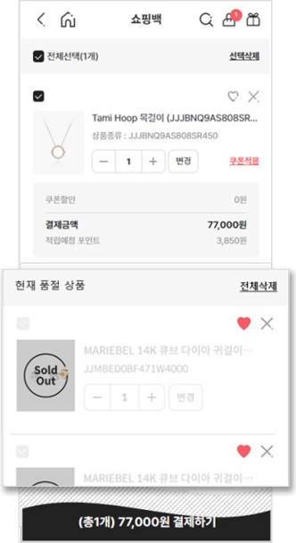
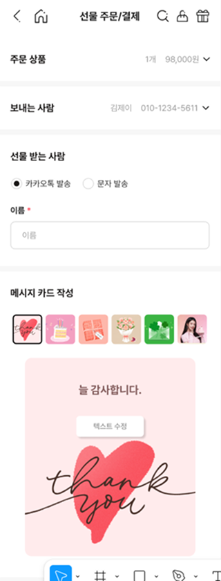
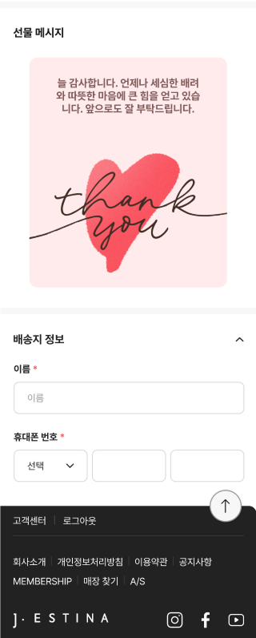

제이에스티나_ DETAIL REVIEW

PROJECT KEY POINT
- 1. 사용자 흐름을 고려한 UI 구조 개선
- 2. 상태 기반 UI 분기 및 인터랙션 구현
- 3. 외부 서비스 연동을 고려한 UI 설계 경험
🧩 사례 A. 상품 상세 페이지 UI/UX 개선
사은품마다 다른 형태의 배너가 상세 정보 영역에 혼재되어 있어
사용자가 상품 정보와 사은품 정보를 명확하게 구분하기 어려운 문제가 있었습니다.
사은품 노출 영역을 별도로 분리하고, 일관된 UI 패턴으로 구성하여
정보 구조를 명확하게 정리
했습니다.


상품 정보와 사은품 정보를 직관적으로 구분할 수 있게 되었으며,
사은품 증정 기간 및 기준 전달의 명확성을 개선했습니다.
🧩 사례 B. 장바구니 상태 분기 UI 개선
상품 상태에 따른 UI 구분이 명확하지 않아
사용자가 현재 상품 상태를 직관적으로 인지하기 어려운 문제가 있었습니다.
품절 및 판매중지 상태를 정의하고,
상태에 따라 UI를 분기 처리 하여 사용자 행동 가능 여부를 명확하게 구분했습니다.


상품 상태를 직관적으로 인지할 수 있도록 개선되어
사용자 혼란을 줄이고 명확한 구매 흐름을 유도할 수 있도록 개선했습니다.
🧩 사례 C. 선물하기 기능 및 카카오톡 연동
기존 선물하기 기능은 결제 완료 후 SMS로만 발송되어
전달 방식이 제한적이고 사용자 선택의 폭이 좁은 문제가 있었습니다.
카카오톡 연동을 통해 발송 채널을 확장하고,
사용자가 상황에 맞는 전달 방식을 선택할 수 있도록 UI 흐름을 개선했습니다.
또한 메시지 전달 과정을 단순화하여 사용자 입력 경험을 개선했습니다.
- 카카오톡 친구 선택 기반의 발송 대상자 선택 UI 구성
- 메시지 카드 선택 및 미리보기 인터페이스 설계
- SMS 및 카카오톡 발송 방식을 선택할 수 있는 UI 제공


발송 채널 선택의 유연성이 확보되고,
사용자 상황에 맞는 선물 전달 경험을 제공할 수 있도록 개선했습니다.